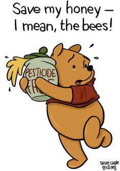
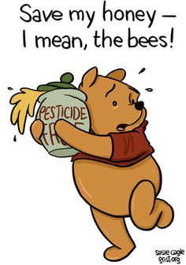

When the honeybees, our most important food pollinators, started dropping like proverbial flies, scientists scrambled to identify their killer (or killers). Attention eventually turned to the increased use of a class of pesticides known as neonicotinoids. Scientists now believe at least some of these pesticides play a major role in Colony Collapse Disorder (CCD), the ongoing demise of honeybee colonies.Who's using them, and for what purpose? Companies like Monsanto, Bayer, Dow Agrosciences . . . in the herbicides and pesticides and seeds they sell to farmers who grow genetically engineered crops. Crops that eventually end up in our food, or in the feed used to fatten up animals in factory farms-animals we slaughter for food.
We need bees in order to grow food, or at least some of it. Yet the food-GMO food, drenched in neonics-we are growing is killing the bees.
It's not just the bees that are dying. Butterfly and bird populations are in decline, too. And it's not just the neonicotinoids that are to blame. Other herbicides and pesticides, especially Monsanto's Roundup, used to grow GMO crops-and also used to contain (kill) weeds in cities and home gardens-are decimating pollinators, fish and wildlife, and some would argue, humans, too.
As consumers ask more and more questions about the impact of GMO foods and crops on our health and environment, we're making smarter choices about the foods we choose to eat. Does my child's cereal contain sugar from genetically engineered beets? Did that steak on my dinner plate come from an animal raised on a factory farm, and fed a diet of Roundup-ready GMO corn, canola, soy or cotton seed?
But we need to look at the bigger picture, too. That means calling for an end to the use of Monsanto's Roundup in urban areas, on our lawns, roadways, schoolyards and parks. It means paying close attention to the seeds and garden plants we buy for our home gardens.
It means asking ourselves what can we do to pressure Monsanto, Dow, Syngenta, and Dupont's customers, both rural and urban, into understanding that their widespread, reckless use of neonics and other toxins is destroying our food, soil, water, air and wildlife? And that organic, sustainable, non-chemical alternatives exist?
It means asking ourselves, how do we force food manufacturers to stop using these poison-drenched GMO crops in their processed food products? How do we get through to the politicians who protect the interests (profits) of pesticide and junk food makers, at the expense of all else? Before it's too late?
We do it by making intelligent and ethical buying decisions. By boycotting the corporations who refuse to hear us. But voting out the politicians who sell us out to the industry lobbyists who fund their political campaigns.
We do it by all of the above. Over and over again.
Over 100 scientists and researchers have urged a federal task force to take immediate action on bee-harming pesticides.
In a letter (pdf) dated Monday and sent to U.S. Department of Agriculture head Tom Vilsack and Environmental Protection Agency chief Gina McCarthy, the scientists write that documented bee declines "are not sustainable," and stress that the pollinators play a crucial role "in our agricultural system and economies."
Beekeepers in the nation have been hit with average losses of nearly 30 percent for the past eight years, they write to Vilsack and McCarthy, who lead the months-old Pollinator Health Task Force.
Protecting the pollinators, they write, means listening to a body of scientific evidence that links a class of pesticides called neonicotinoids, or neonics, with lethal and sub-lethal harm to bees.
Neonics are persistent and systemic, the experts write, creating multiple paths of exposure, including from dust, pollen, or water droplets from treated plants, for bees to the pesticides.
The letter references a global analysis based on 800 peer-reviewed reports called the Worldwide Integrated Assessment of the Impact of Systemic Pesticides on Biodiversity and Ecosystems (WIA), which focused on neonics and found "clear evidence" that they posed threats to bees. In addition to studies linking neonics to harm to bees, the scientists note in the letter, research has also pointed to questionable efficacy of neonics on crop yields and production.
"The President’s Task Force should listen to the body of science that links pesticides to bee harm and bee declines," stated letter signatory Jim Frazier, PhD, an emeritus entomology professor at Pennsylvania State University and commercial beekeeper advisor who specializes in chemical ecology.
"These systemic pesticides are not only lethal to pollinators, but at low doses can disrupt critical brain functions and reduce their immunity—leaving them susceptible to common pathogens. The weight of the scientific evidence certainly incriminates neonicotinoids," he added.
Based on the threats neonics pose, the letter outlines three recommendations the scientists say the task force should prioritize: placing a moratorium on use of neonics; suspending registrations on neonics until the EPA completes its review, which won't happen before 2018; and increasing investment into looking for non-pesticide alternatives to neonics.
Further, the letter states,
the White House Task Force should recommend incentives for farmers to create healthy pollinator habitats in the form of diversified, pesticide-free landscapes as an alternative to our current system of intensive monoculture. Such landscapes support natural enemies also, and thus provide an alternative to pesticides. Maintaining high-quality habitats around farms aids in promoting pollinator richness and diversity. Thriving populations of beneficial insects result in a healthier and more resilient crop as well as benefiting the larger ecosystem.
The scientists' letter was timed to meet the deadline the Pollinator Health Task Force set for public comments following two "public listening sessions" this month.
Aprolonged and mysterious die-off of the nation’s honeybees, a trend worrisome both to beekeepers and farmers who depend on the insects to pollinate their crops, apparently worsened last year.
In an annual survey released on Wednesday by the Bee Informed Partnership, a consortium of universities and research laboratories, about 5,000 beekeepers reported losing 42.1 percent of their colonies in the 12-month period that ended in April. That is well above the 34.2 percent loss reported for the same period in 2013 and 2014, and it is the second-highest loss recorded since year-round surveys began in 2010.
Most striking, however, was that honeybee deaths spiked last summer, exceeding winter deaths for the first time. Commercial beekeepers, some of whom rent their hives to farmers during pollination seasons, were hit especially hard, the survey’s authors stated.
“We expect the colonies to die during the winter, because that’s a stressful season,” said Dennis vanEngelsdorp, an assistant entomology professor at the University of Maryland who directs the survey for the bee partnership. “What’s totally shocking to me is that the losses in summer, which should be paradise for bees, exceeded the winter losses.”
Bees are not in danger of extinction, but their health is of major concern to agriculture, where honeybees’ pollination services are estimated to be worth $10 billion to $15 billion a year.
Nobody knows with certainty why honeybee deaths are rising. Beekeepers once expected to lose perhaps 10 percent of their bees in an average year. But deaths began to spike in the middle of the past decade, when a phenomenon in which bees deserted their hives and died en masse — later named colony collapse disorder — began sweeping hives worldwide.
Those mass die-offs have abated somewhat in recent years, experts say, but colonies remain in poor health and overall death rates remain much higher than in the past.
Dr. vanEngelsdorp said increasingly poor nutrition could be a factor in the rising summer death rate. Rising crop prices have led farmers to plow and plant millions of acres of land that once was home to wildflowers; since 2007, an Agriculture Department program that pays farmers to put sensitive and erosion-prone lands in a conservation reserve has lost an area roughly equal to half of Indiana, and budget cuts promise to shrink the program further. Dr. vanEngelsdrop and other scientists cite two other factors at work in the rising death rate: a deadly parasite, the varroa mite, and pesticides.
In recent years, some experts have focused on neonicotinoids, a class of pesticides used almost universally on some major crops in the United States. The European Commission has banned the use of three variants of the pesticide on flowering plants, citing risks to bees, and questioned whether they should be used at all.
The Environmental Protection Agency said last month that it was unlikely to approve any new uses of the pesticides until more tests on the risks to bees and other pollinators have been completed.